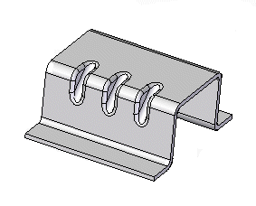
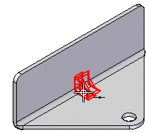
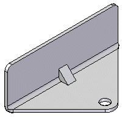
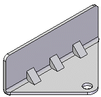
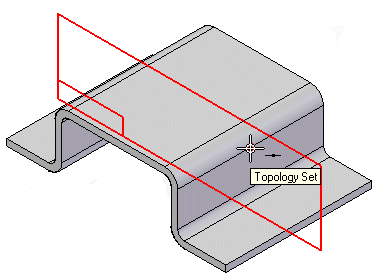
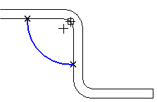
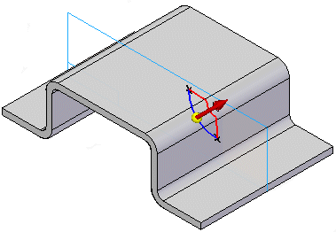
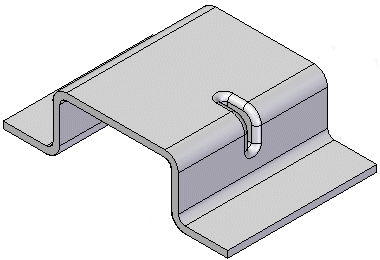
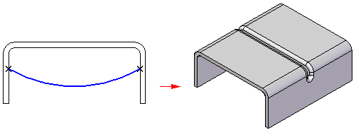
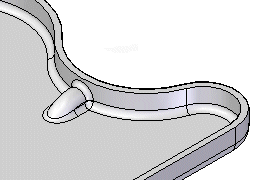

Constructing gussets
You can use the Gusset command to add support across a bend. In the synchronous environment, you can construct gussets automatically across a bend. In the ordered environment, you can either construct gussets automatically or you can construct them from a drawn profile.

Gussets are not displayed in the flat pattern representation or in drawing views of the flat pattern in the Draft environment.
You can use the Gusset Options dialog box to specify the definition of the gusset. You can control such things as the shape of the gusset, the width and taper angle of the gusset, and the punch and die radius if the gusset is rounded. You can also use the dialog box to specify if the gusset is created automatically or from a user-drawn profile.
Constructing gussets automatically in the ordered environment
Select the Automatic Profile option on the Gusset Options dialog box to automatically create a gusset. Once you select a bend, the gusset profile is automatically displayed along the bend.

You can then click a keypoint to place the gusset,

or, use the Pattern Type option to specify whether you want to place one gusset or a pattern of gussets. For example, you can use the Fit option to place three gussets that are equally spaced along the selected edge.

Constructing gussets from a user-drawn profile in the ordered environment
Select the User—Drawn Profile option on the Gusset Options dialog box to use a drawn profile to create a gusset. The profile can be an existing sketch or you can draw the profile while in the Draw Profile step.
To create a gusset from a user-drawn profile:
-
Click a keypoint to create a plane on which you want to draw the profile.

Note:You may select an existing sketch to define the gusset profile and skip to step 3.
-
Draw the profile.

-
Click to define the direction of the gusset.

-
Click Finish to place the gusset.

When using the User-Drawn Profile option, you can also you can draw a profile that constructs a gusset across two bends,

or, across a non-linear bend.

How do I
Construct a gussetEdit a gusset
Look up more details
Gusset commandGusset command bar
Gusset command bar
Gusset Options dialog box